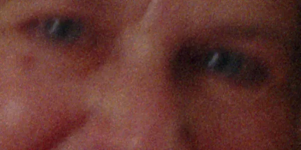

Raw DNG
Linear scanner data with Konica Minolta's colour calibration. Opens in Lightroom, darktable, Negative Lab Pro and Photos. Negatives can also be saved as positive DNGs, which match the Minolta TIFF in Preview. Multi-sampled scans are kept as float.
Colour profiles
Slides embed MLTF3200p.icc, Minolta-processed negatives MLTF3200n.icc: the original software's profiles.
HDR
A second pass 2 stops brighter, aligned and merged: about 4× less noise in dense areas. Works with Minolta processing.
Negatives
- Minolta processing: the original auto-exposure and film curves.
- Simple invert: in density, orange mask removed.
- Raw: left negative, for Negative Lab Pro.
Autofocus
About a third of the original's lens moves. --af classic runs the original sequence.
Deblur
Reduces camera blur from a missed focus. The blur is measured per region; sharp frames are left alone, and grain and colour are kept.

dsd4 scan --deblur low -o d.tiff
dsd4 deblur scan.dng --level high4000 dpi Experimental
Undoes the scanner's own measured blur, reduces sensor and colour noise, and resamples to 4000 dpi. Grain is not sharpened. Based on Norman Koren's film-scanner MTF studies.
| Razor-blade edge | MTF50 |
|---|---|
| 3200 dpi scan | 44.8 lp/mm |
| Resampled to 4000 by macOS | 35.3 lp/mm |
--experimental 4000dpi | 53.8 lp/mm |
Uses a typical Dual IV's measurements unless you calibrate yours:
dsd4 research mtf # razor blade in a slide mount
dsd4 research grain # frame with sky or blank film
dsd4 research noise # blank filmInstall
- Open @DOWNLOAD_FILE@.
- Connect the scanner and insert a holder.
- Scan from Image Capture or Preview, or run
dsd4in Terminal.
Command line
dsd4
dsd4 scan --dpi 3200 -o s.tiff
dsd4 scan --film nega --minolta -o n.tiff
dsd4 scan --format dng --samples 4 -o r.dng
dsd4 scan --format dng --hdr -o h.dng
dsd4 scan-all --frames 4 -o roll
dsd4 --help